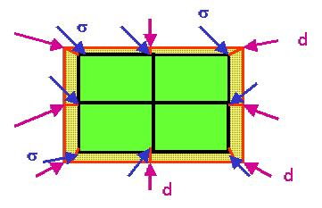

In a tetrahedron model it is possible to apply interface elements on boundaries. By right-clicking on “boundary ” one can choose “Apply Boundary Interfaces ”. When checked, boundary elements are automatically added (unchecking removes the elements).
One can now apply both deformation and stress boundary conditions to the mesh. The deformation vectors (d) are put on the exterior of the boundary elements, whereas the stress tensors (s) are put on the interior of the boundary elements (see figure).

The exterior of all boundary elements is fixed in all direction, hence can be given any forced deformation in all directions. Depending on the stiffness of the elements, the applied stress or the applied deformation will dominate the tetrahedron mesh. At intermediate stiffness's, a “best of both worlds” will be ruling.
The stiffness of the interface elements can be set by right-clicking on “Boundary Conditions” and selecting “Interface Attributes”. Click the option, and the Interface attributes dialog appears.
Applying interface elements on the boundary has side effects.